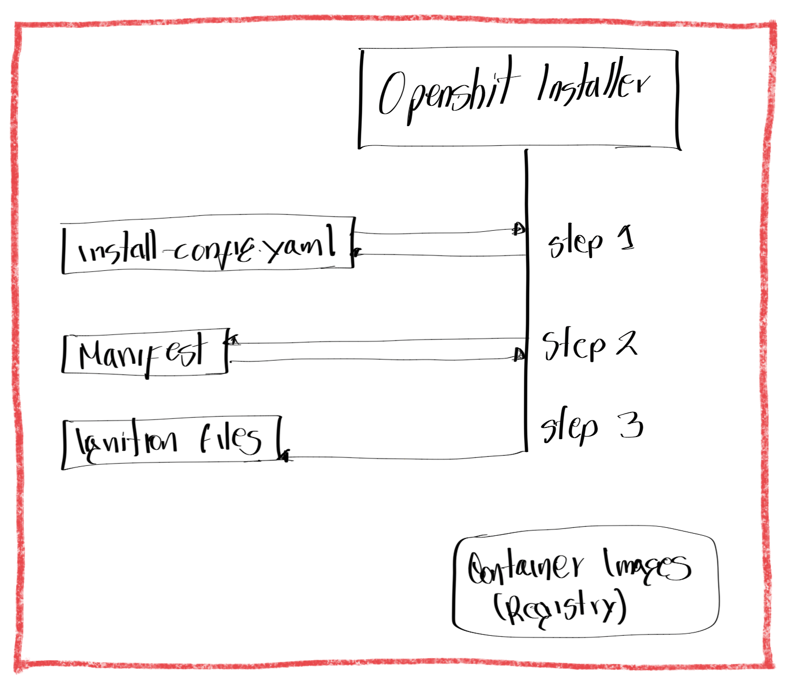
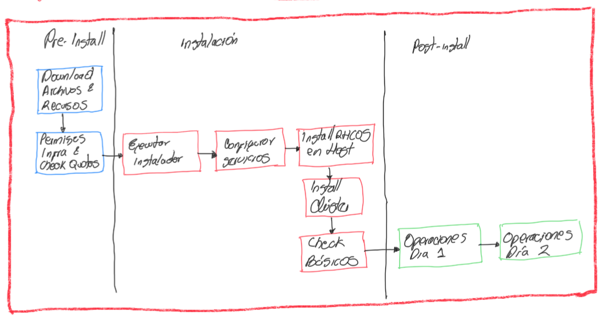
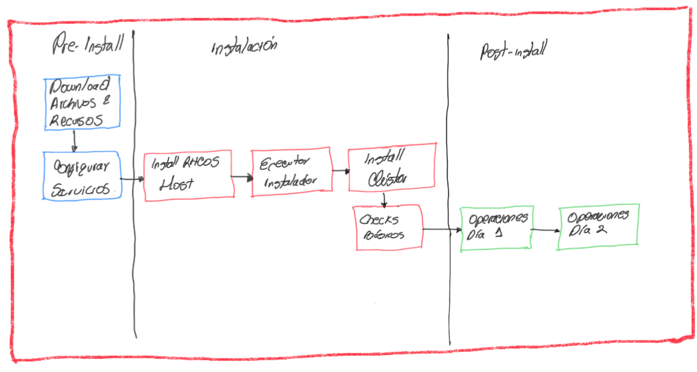

Capitulo 1 - Descripción del proceso de Instalación de OCP
Obejetivos:
- Describir y comparar los métodos de instalación automatica full-stack.
- Identificar instalador OCP y sus archivos
- Describir las diferencias emtre un clúster autogestinado y los servicios hosted de OCP
Métodos de instalacion
Debido a que el instalar OCP 3 era bastante complejo, se crea una mejora en la versión 4 la cual permite una instalación desplegar un clúster con las opciones necesarias.
Se denomina "Día 2" a una fase de la instalación donde se puede personalizar y ampliar las funcionalidades del cluster, a parte de las siguientes ventajas:
- Automatización de la instalación
- Menos errores humanos en la instalación
- Se aplica buenas prácticas recomendadas para OCP 4
- Facilita la integración más adelante de:
- OCP Assisted Installer
- RH Advanced Cluster Managment for K8S (ACM)
- Pipelines (CI/CD)
Achivos de configuración Ignition
Para instalar un clúster de OCP se debe utilizar el comando openshift-install al cual se conoce como el instalador de OCP. El instalador genera 3 archivos de configuración de inicio o de startup (ignition):
- bootstrap
- Control plane nodes
- Compute nodes
Ingnition es una tool de aprovisionamiento en el primer boot de sistemas RHCOS (Red Hat Enterprise Linux CoreOS) el cual usa un archivo .ign en formato JSON donde se declara el estado para el sistemas RHCOS y aplioca la configuración requerida en el startup inicial. Este proceso consta de:
- Boot de Linux
- Ejecución en nodos físicos, nodos virtuales o instancias en Cloud
- Funciones unificadas con el kickstart y cloud-init del sistema RHCOS
- Se ejecuta en el paso initramfs del proceso de boot RHCOS
- Configura Storage, unidades systemd, certificados, usuarios
- Consume los archivos de configuración generados por el comando y instalador y el MCO (Operador Machine Config)
openshift-installusa los archivos de configuración del startup para configurar el estado de cada nodo- el MCO aplica los cambios despues de la instalación
El startup carga los archivos desde 3 posibles fuentes: disco local, metadas Cloud o por red con HTTP/HTTPS:
Ejemplo de archivo de configuración:
Validar que en el SO donde se edita el archivo este instalada la librería jq
{
"ignition": {
"version": "3.1.0"
},
"passwd": {
"users": [
{
"name": "core",
"sshAuthorizedKeys": [
"ssh-rsa AAA...hlw== lab@utility.lab.example.com\n",
"ssh-rsa AAA...3DR\n"
]
}
]
},
"storage": {
"files": [
{
...output omitted...
{
"overwrite": false,
"path": "/etc/motd",
"user": {
"name": "root"
},
"append": [
{
"source": "data:text/plain;charset=utf-8;base64,VGh...lCg=="
}
],
"mode": 420
},
...output omitted...
"systemd": {
"units": [
{
"contents": "[Unit]\nDescription=Bootstrap a Kubernetes cluster\nRequires=crio-configure.service\nWants=kubelet.service\nAfter=kubelet.service crio-configure.service\nConditionPathExists=!/opt/openshift/.bootkube.done\n\n[Service]\nWorkingDirectory=/opt/openshift\nExecStart=/usr/local/bin/bootkube.sh\n\nRestart=on-failure\nRestartSec=5s\n",
"name": "bootkube.service"
},
...output omitted...
}
]
}
}
Solucionando problemas:
- Los datos de startup (ignition) están codificados en base64 para revisar se puede decodificar utilizando el comando
base64 -d
[user@demo ~]$ echo "VGh...lCg==" | base64 -d
This is the bootstrap node; it will be destroyed when the master is fully up.
The primary services are release-image.service followed by bootkube.service. To
watch their status, run e.g.
journalctl -b -f -u release-image.service -u bootkube.service
- Validar despues de boot de RHCOS la configuración de startup
[root@bootstrap ~]$ cat /boot/ignition/config.ign
{"ignition":{"version":"3.1.0"},"passwd":{"users":
[{"name":"core","sshAuthorizedKeys":["ssh-rsa...]}}
- Validar registros de encendido
[root@bootstrap ~]# journalctl -t ignition
- Se puede editar el archivo
install-config.yamlpara personalizar la isntalación de OCP - Se ejecuta
openshift-installerpara crear los manifiestos de K8S desde el archivo YAML - Luego se ejecuta
openshift-installerpara crear los archivos startup (ignition)
Ejecución del instalador
El proceso de instalación se puede explicar en 11 pasos en secuencia:
- Paso 1 Ejecución del instalador. Este solicita información sobre el clúster y luego crea el archivo de configuración
install-config.yaml. - Paso 2 Con el yml de configuración, el instalador de OCP crea los manifiestos de K8S con las instrucciones necesarias para compilar los recursos de la instalación.
- Paso 3 Con el contenido de los manifiestos, el proceso de instalción de OCP crea los archivos de startup (ignition) poara el nodo bootstrap bootstart.ing, los nodos de control o master.ing y los nodos de procesamiento o workers.ing

- Paso 4 En el node bootstrap, realiza el boot y obtiene los recursos remotos del startup inicial. Aqui el API de K8S está ejecutandose en el nodo boot
- Paso 5 Los control node inician y obtienen sus recursos.
- Paso 6 el node bootstrap inicia e instala temporalmete el operador etcd
- Paso 7 el operator etcd ejecutandose en el node bootstrap escala el cluster a 3 instancias usando 2 control node
- Paso 8 en el temporal control bootstart programa el control plane de PDN. Transferencia de clúster etcd
- Paso 9 el temporal control plane termina e inicia el control plane de PDN. El API de K8S ejecutandose en el control plane de PDN
- Paso 10 Cuando la instalación es Auto full-stack se apaga el node bootstrap ya que no es necesario
- Paso 11 el control plane PDN despliega los recursos remotos del clúster
NOTAS
- Si se utiliza la isntalación de infra preesxistente, la instalación puede instalar los worker
- Red Hat solo soporta 3 control plane nodes
- Red Hat a pprobado máximo 2000 compute nodes
- Red Hat recomienda al menos 2 compute nodes para HA
Métodos de instalación
| Métodos de instalación | Descripción | Crear Red | Config Balanceador | Config DNS | Deploy HW o VM | Install SO | Config Startup Ignition | Soporte SO Control plane | Soporte SO worker | Config Storage persistente | Config Storage Provider | Config provisioning node auto-scaling |
|---|---|---|---|---|---|---|---|---|---|---|---|---|
| Full-stack Automation | Instalación manual mínima OCP Installer desliega el clúster en la infraestructura que el Installer aprovisiona y el clúster mantiene |
Instalador | Instalador | Instalador | Instalador | Instalador | Instalador | Instalador RHCOS | Instalador RHCOS (1) | Instalador (2) | Instalador (2) | Instalador |
| Pre-existeing Infraestructure | Instalacion flexible Usan el Instaler para desplegar un clúster en la infraestructura que usted mantiene y prepara | usuario | usuario | usuario | usuario | usuario | instalador | usuario: RHCOS | usuario: RHCOS RHEL 7 | usuario | usuario | Solo providers OCP Machine API |
NOTAS:
- Ambas métodos soportan la adición de compute nodes por el usuario como parte del día de operación 2
- Las instalación son en tipo bare-metal menos en Full-stack
- Diferencia entre UPI CI (Cloud Integration) y UPI BM (Bare Metal)
- CI el provider se integra con OCP
- BM si no hay soporte del proveedor no hay auto-scaling de nodos
Requisitos Generales
- Aprovisionar host bastion
- SSH key del bastion
- Download & Install
openshift-installen el bastion - Download & Install
ocen bastion - Obtener pull-secret del registry
- Acceso a NTP en los nodos del clúster
- Reglas de FW habilitadas para el clúster
Requisitos de Full-stack
- Validar permisos de infarestructura y quotas
- En Cloud, account de Cloud con permisos y quotas necesarios
Requisitos de Pre-existente
- Configurar servicios de red
- Aprovisionar HW (sea VM o físico) para los nodos del clúster
- Instalar RHCOS en los nodos del clúster


Validación de servicios de DNS de OCP
Con el método de instalación de infra pre-existente, se debe configurar el servicio DNS con registros de la zona directa DNS de la siguiente manera
<componente>.<cluster_name>.<base_domain ejemplo: componente.ocppdn4.eocampo.lab
Es requerido también que la zona reversa con los registros o punteros PTR estén diligenciados corretamente. Estos son los registros requeridos:
| Componente | Registro | Descripción |
|---|---|---|
| K8S API | api.ocppdn4.eocampo.lab | (A/AAAA o CNAME y PTR) Identifica balanceador de carga de API para los control plane |
| K8S API | api-int.ocppdn4.eocampo.lab | (A/AAAA o CNAME y PTR) Identifica balanceador de carga de API para los control plane |
| Routes | *.apps.ocppdn4.eocampo.lab | (A/AAAA o CNAME y PTR) Identifica balanceador de carga del Ingress que apunta a los control plane |
| Clúster Nodes | hostsocp01.ocppdn4.eocampo.lab | (A/AAAA o CNAME y PTR) Identifica cada host del clúster |
Las rutas utilizadas para almacenar la configuración de instalación son:
cat /etc/named.conf
...output omitted...
zone "example.com" {
type master;
file "example.com.db";
allow-update { none; };
};
...output omitted...
cat /var/named/example.com.db
$TTL 1D
@ IN SOA dns.ocp4.example.com. root.example.com. (
2019022400 ; serial
3h ; refresh
15 ; retry
1w ; expire
3h ; minimum
)
IN NS dns.ocp4.example.com.
dns.ocp4 IN A 192.168.50.254
api.ocp4 IN A 192.168.50.254
api-int.ocp4 IN A 192.168.50.254
*.apps.ocp4 IN A 192.168.50.254
bootstrap.ocp4 IN A 192.168.50.9
master01.ocp4 IN A 192.168.50.10
master02.ocp4 IN A 192.168.50.11
master03.ocp4 IN A 192.168.50.12
worker01.ocp4 IN A 192.168.50.13
worker02.ocp4 IN A 192.168.50.14
cat /var/named/example.com.reverse.db
$TTL 1D
@ IN SOA dns.ocp4.example.com. root.example.com. (
2019022400 ; serial
3h ; refresh
15 ; retry
1w ; expire
3h ; minimum
)
IN NS dns.ocp4.example.com.
254 IN PTR api.ocp4.example.com.
254 IN PTR api-int.ocp4.example.com.
9 IN PTR bootstrap.ocp4.example.com.
10 IN PTR master01.ocp4.example.com.
11 IN PTR master02.ocp4.example.com.
12 IN PTR master03.ocp4.example.com.
13 IN PTR worker01.ocp4.example.com.
14 IN PTR worker02.ocp4.example.com.
Se utiliza el comando dig para validar la configuración de DNS antes de proceder con la instalación:
dig @dns.ocp4.example.com api.ocp4.example.com
...output omitted...
;; ANSWER SECTION:
api.ocp4.example.com. 86400 IN A 192.168.50.254
...output omitted...
dig @dns.ocp4.example.com api-int.ocp4.example.com
...output omitted...
;; ANSWER SECTION:
api-int.ocp4.example.com. 86400 IN A 192.168.50.254
...output omitted...
dig @dns.ocp4.example.com -x 192.168.50.254
...output omitted...
;; ANSWER SECTION:
254.50.168.192.in-addr.arpa. 86400 IN PTR api.ocp4.example.com.
254.50.168.192.in-addr.arpa. 86400 IN PTR api-int.ocp4.example.com.
...output omitted...
Validación de servicios de Firewall
Los puertos de red debes estar abiertos antes de ejecutar la instalación y debe garantizarse la conectividad entre todos los nodos del clúster y una correcta resolución de nombres entre todos.
De todos los nodos a todos los nodos:
| Protocolo | Puerto | Descripción |
|---|---|---|
| ICMP | N/D | Pruebas de Ping |
| TCP | 9000-9999 | Servicios de Host |
| TCP | 10250-10259 | Los puertos de reserva K8S |
| TCP | 10256 | openshift-sdn |
| UDP | 4789 | VXLAN y Geneve |
| UDP | 6081 | VXLAN y Geneve |
| UDP | 9000-9999 | Servicios de Host |
| TCP/UDP | 30000-32767 | Node Ports K8S |
De todos los nodos a todos los control plane:
| Protocolo | Puerto | Descripción |
|---|---|---|
| TCP | 2379-2380 | etcd server, peer, y puertos de métrica |
| TCP | 6443 | API de K8S |
Del Balanceador de carga de API:
| Protocolo | Back-end nodes | Acceso Interno | Acceso Externo | Descripción |
|---|---|---|---|---|
| 6443 | Bootstrap temp & nodos control plane | SI | SI | K8S APi Server |
| 22623 | Bootstrap temp & nodos control plane | SI | NO | Maquina Config server |
Del Balanceador de carga del ingress:
| Protocolo | Back-end nodes | Acceso Interno | Acceso Externo | Descripción |
|---|---|---|---|---|
| 443 | Nodos del clúster donde se ejecuta el router ingress de los pods | SI | SI | Tráfico HTTPS |
| 80 | Nodos del clúster donde se ejecuta el router ingress de los pods | SI | SI | Tráfico HTTP |
Modos de Instalación OCP
| Conectado | Desconectado |
|---|---|
| Los nodos del clpuster tienen acceso a internet para descargar las imágenes desde quay.io y a registry.redhat.io. esta modo es soportado cuando se usa la instalación automática full-stack o una instalación pre-existente | Este tipo de instalación es cuando no se tiene acceso a internet. el instaldor de OCP utiliza un registry local para realiezar el pull de imágenes |
La instalación de ambientes desconectados tienen algunas restricciones ue deben tenerse en cuenta:
- Copia de las imágenes con especificación API
schema2en el registry local. - Acceso a internet para descargar las imágnes desde los registries haceia el registry lacal
- Copia de las imágenes requeridas para la instalación en el registry local
Se debe obtener aparte de todas las imagenes necesarias para instalar en el registry local, la data de la versión de OCP: imageContentSource. Se debe copiar todo el siguiente contenido en el registry local: